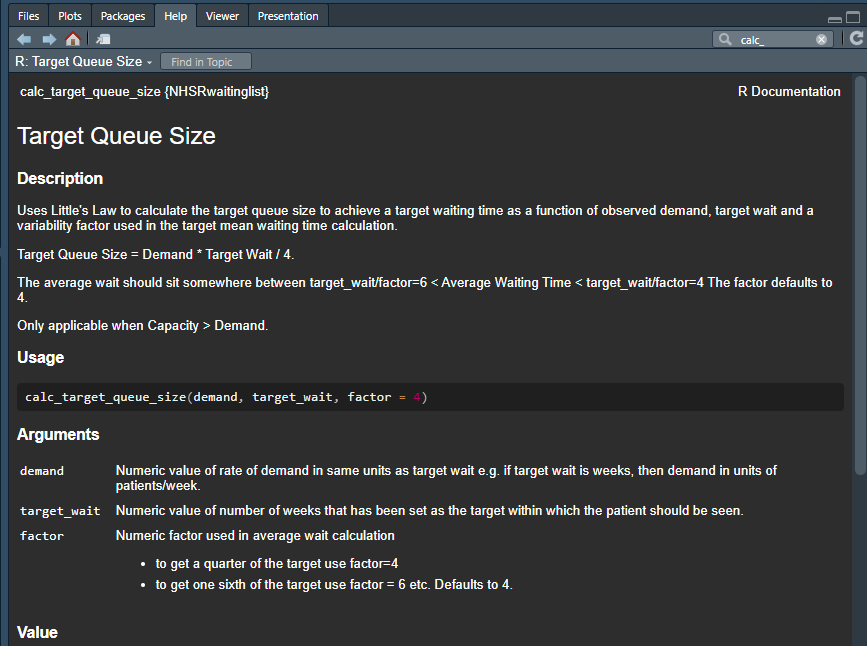
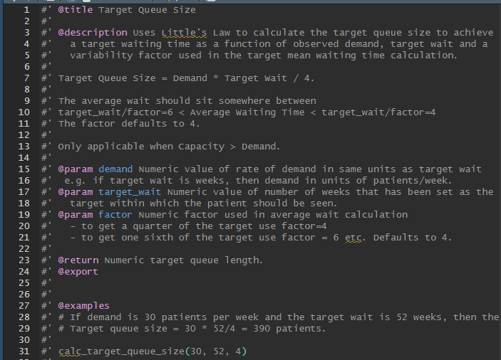
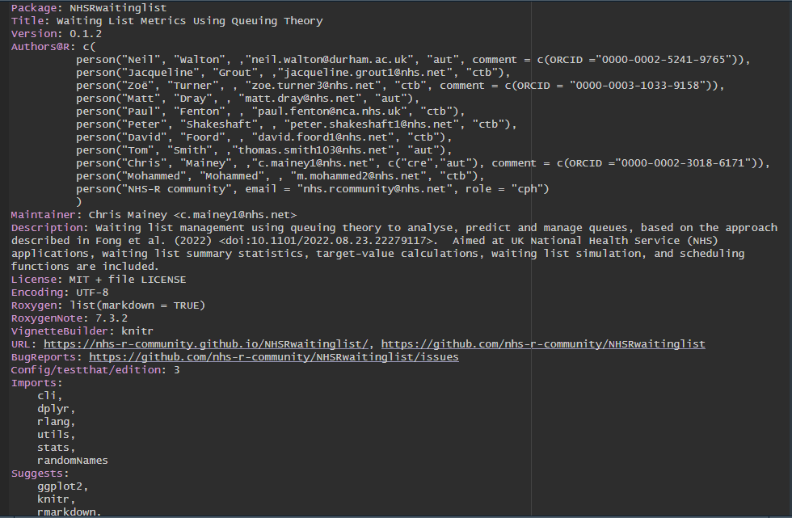
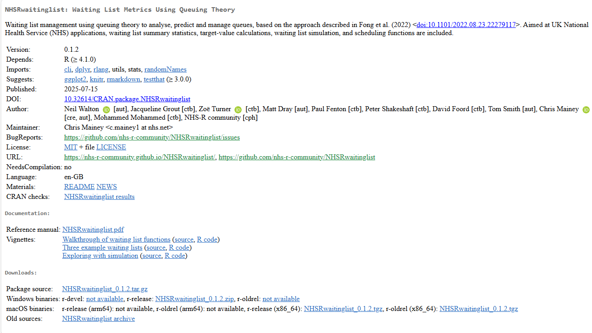
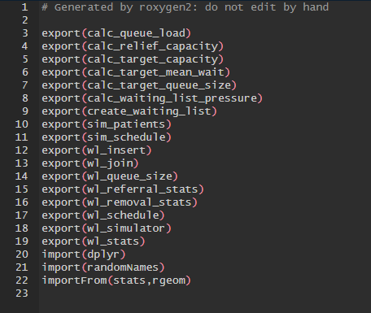
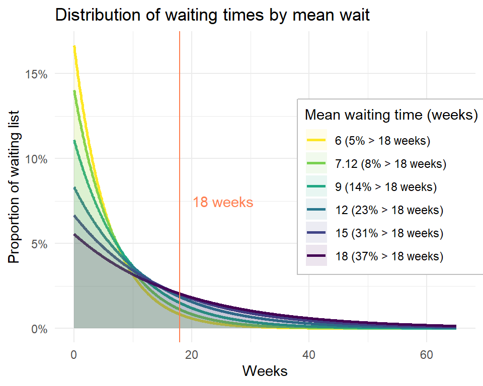

Building the NHSRwaitinglist package
Chris Mainey
Email: c.mainey1@nhs.net
Overview
Why build a package / library?
How to build one in R
What is NHSRwaitinglist?
Quirks along the way
I will jump around a bit between slides, IDE, and GitHub
Why build a package?
When you want to share code so it is reused by others
- Easier for regular users, not just developers
- Include documentation, and better
Building Packages in R
https://r-pkgs.org/
Key steps:
- Build your code into functions
- Document (using
ROxygen2) - Build and test
Essential parts of package
- Your code in functions in
R/my_function.R - Documentation of each function in
man/my_function.Rd - DESCRIPTION file
- NAMESPACE file
1. Your code in functions (1)
Function take generic inputs, perform task on them, and often give an output.
1. Your code in functions (2)
Function has:
A name (
my_function)An input (
vect)A return value (by default returns last line, but can be explicit with
return())
Usually they are longer and more complex, but this is the building block
2. Documentation
For a user, each function should be clearly explained.
- Standard, markdown-style format:
.Rd - Can write directly but using tools is easier
ROxygen2tags are translated into.Rdfiles


3. DESCRIPTION file
This is the ‘front door’ for the package.
- What it is and does
- Links to GitHub and website
- Authors
- Dependencies


4. NAMESPACE file
This is trickier…
List what functions are available for use / other packages to call
Imports what

Building the package
To wrap it all up (on Windows), you need to install RTools.
Build the package, using
devtoolsorpkgbuildRun automated checks (required for CRAN)
Release!
- Via a source control tool e.g. GitHub
- Via a package repository e.g. CRAN, or Bioconductor
NHSRwaitinglist
NHSRwaitinglist is an R package implementing the waiting list management approach described in the paper Understanding Waiting Lists Pressures by Fong et al. (2022).
Paper: medR\(\chi\)iv
Package: CRAN
Source Code: GitHub
Package documentation website: pkgdown via GitHub pages
Aims
To apply queuing theory methods to waiting list data for NHS use. Aiming to inform queue management with data and scientific theory, including:
Waiting list pressures
Target queue sizes / waiting times
Target or relief capacity
Simple simulation

Example:
library(NHSRwaitinglist)
# simulate a waiting list
waiting_list <- wl_simulator(
start_date = "2020-01-01",
end_date = "2024-03-31",
demand = 10, # simulating 10 patient arrivals per week
capacity = 10.2 # simulating 10.2 patients being treated per week
)
# compute some waiting list statistics
wl_stats(
waiting_list = waiting_list,
target_wait = 18 # standard NHS 18wk target
) mean_demand mean_capacity load load_too_big count_demand queue_size
1 9.920052 10.07576 0.9845465 FALSE 2198 12
target_queue_size queue_too_big mean_wait cv_arrival cv_removal
1 44.64023 FALSE 2.5 1.127442 0.6882925
target_capacity relief_capacity pressure
1 10.11393 NA 0.2777778Experience building it:
- GitHub:
- Issues
- Pull-request -> forked workflow
- Actions
- Writing unit tests
- ChatGPT (for better or worse)
codecov
usethis- Functions for many things you need
pkgdown- Easy website
- Code/development style:
- Decide on standard
- Linters
- CRAN release is a lot of work